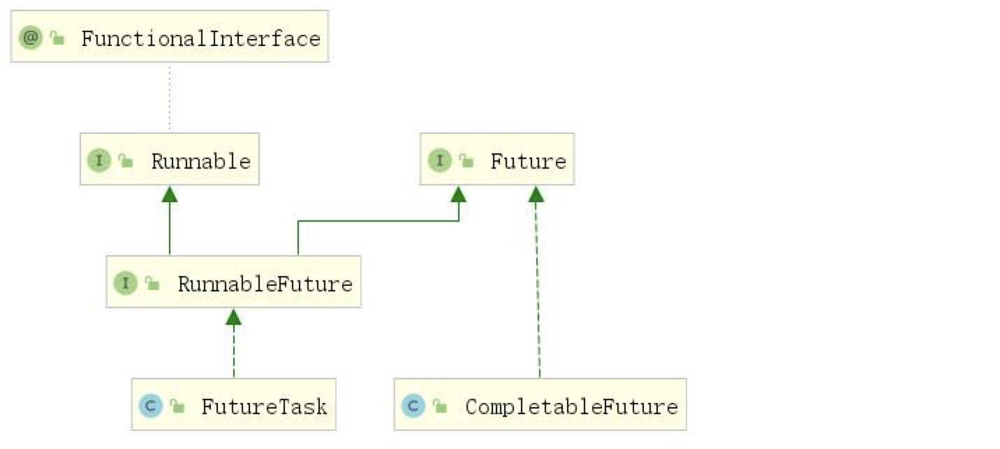
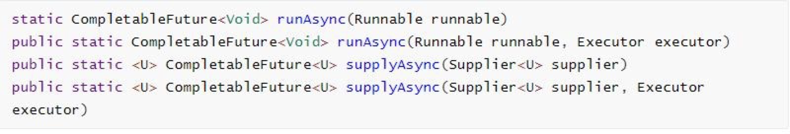
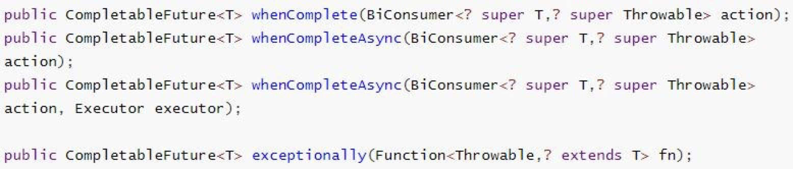
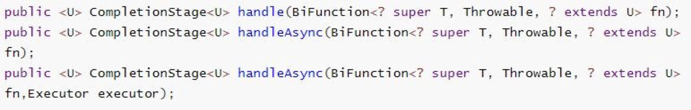
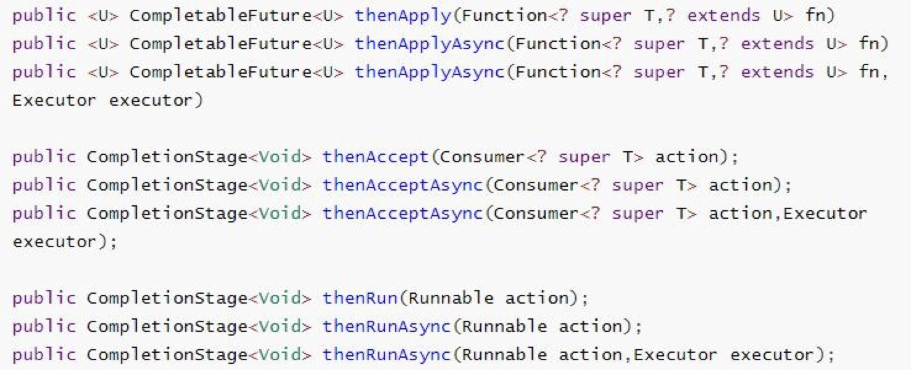
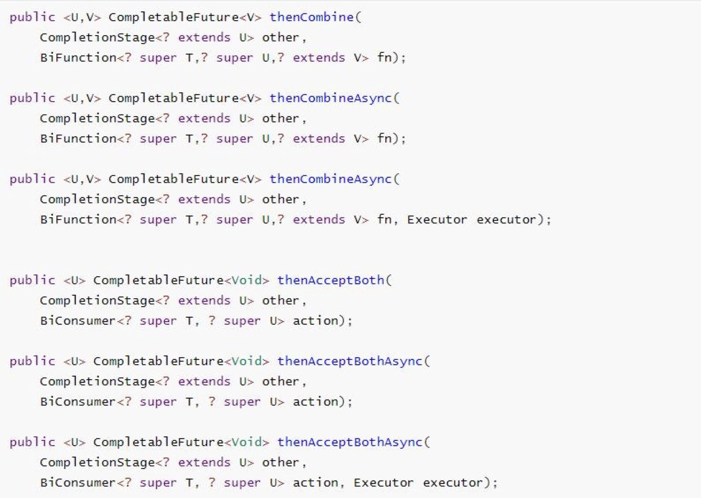
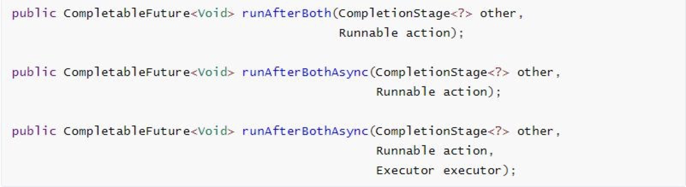
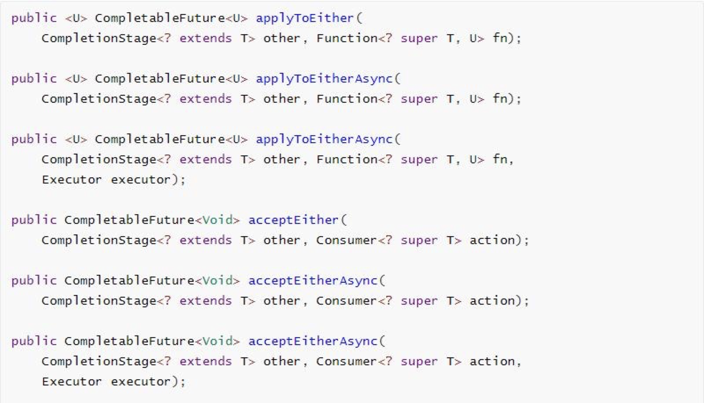
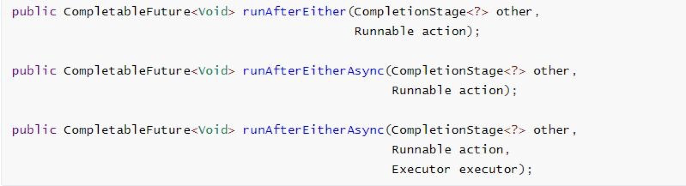
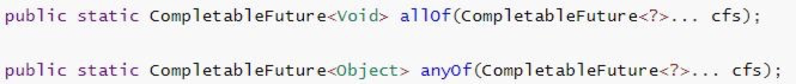

CompletableFuture介绍
Future 是 Java 5 添加的类，用来描述一个异步计算的结果。你可以使用isDone方法检查计算是否完成，或者使用get阻塞住调用线程，直到计算完成返回结果，你也可以使用cancel 方法停止任务的执行。
虽然Future以及相关使用方法提供了异步执行任务的能力，但是对于结果的获取却是很不 方便，只能通过阻塞或者轮询的方式得到任务的结果。阻塞的方式显然和我们的异步编程的 初衷相违背，轮询的方式又会耗费无谓的 CPU 资源，而且也不能及时地得到计算结果，为 什么不能用观察者设计模式当计算结果完成及时通知监听者呢？
很多语言，比如 Node.js，采用回调的方式实现异步编程。Java 的一些框架，比如 Netty，自 己扩展了 Java 的 Future接口，提供了addListener等多个扩展方法；Google guava 也提供了 通用的扩展 Future；Scala 也提供了简单易用且功能强大的 Future/Promise 异步编程模式。
作为正统的 Java 类库，是不是应该做点什么，加强一下自身库的功能呢？
在 Java 8 中, 新增加了一个包含 50 个方法左右的类: CompletableFuture，提供了非常强大的 Future 的扩展功能，可以帮助我们简化异步编程的复杂性，提供了函数式编程的能力，可以 通过回调的方式处理计算结果，并且提供了转换和组合 CompletableFuture 的方法。 CompletableFuture 类实现了 Future 接口，所以你还是可以像以前一样通过get方法阻塞或 者轮询的方式获得结果，但是这种方式不推荐使用。
CompletableFuture 和 FutureTask 同属于 Future 接口的实现类，都可以获取线程的执行结果。

CompletableFuture 详解
创建异步对象
CompletableFuture 提供了四个静态方法来创建一个异步操作。

- runXxxx 都是没有返回结果的，supplyXxx 都是可以获取返回结果的
- 可以传入自定义的线程池，否则就用默认的线程池；
计算完成时回调方法

whenComplete 可以处理正常和异常的计算结果，exceptionally 处理异常情况。 whenComplete 和 whenCompleteAsync 的区别：
1 | whenComplete：是执行当前任务的线程执行继续执行 whenComplete 的任务。 |
1 | public class CompletableFutureDemo { |
handle方法

和 complete 一样，可对结果做最后的处理（可处理异常），可改变返回值。
线程串行化方法

- thenApply 方法：当一个线程依赖另一个线程时，获取上一个任务返回的结果，并返回当前 任务的返回值。
- thenAccept 方法：消费处理结果。接收任务的处理结果，并消费处理，无返回结果。
- thenRun 方法：只要上面的任务执行完成，就开始执行 thenRun，只是处理完任务后，执行 thenRun 的后续操作
- 带有 Async 默认是异步执行的。同之前。
- 以上都要前置任务成功完成。
- Function<? super T,? extends U>
- T：上一个任务返回结果的类型
- U：当前任务的返回值类型
两任务组合-都要完成


两个任务必须都完成，触发该任务。
- thenCombine：组合两个 future，获取两个 future 的返回结果，并返回当前任务的返回值
- thenAcceptBoth：组合两个 future，获取两个 future 任务的返回结果，然后处理任务，没有 返回值。
- runAfterBoth：组合两个 future，不需要获取 future 的结果，只需两个 future 处理完任务后， 处理该任务。
两任务组合- 一个完成


当两个任务中，任意一个 future 任务完成的时候，执行任务。
- applyToEither：两个任务有一个执行完成， 获取它的返回值，处理任务并有新的返回值。
- acceptEither：两个任务有一个执行完成， 获取它的返回值，处理任务，没有新的返回值。
- runAfterEither：两个任务有一个执行完成， 不需要获取 future 的结果，处理任务，也没有返 回值。
多任务组合

allOf：等待所有任务完成
anyOf：只要有一个任务完成
实战案例
以商城购物车添加商品为例，添加商品时，需要填充商品信息，需要做多次的远程调用，多次的调用如果没有先后关系制约，可以异步的同时进行。
1 | //1、远程查询当前要添加的商品的信息 |

...
...
This is copyright.